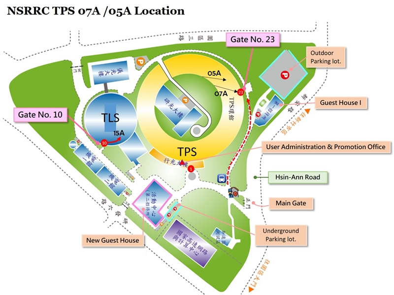

TPS 07A is an in-vacuum undulator-based, high-intensity and variable-focus (2-100 µm in diameter) crystallography beamline at the 3 GeV Taiwan Photon Source. The beamline is specially designed for significant but difficult projects with protein crystals of small size (30 – 1 µm) and weak diffraction, such as virus particles, membrane proteins and protein/nucleic acid complexes. In addition, the beamline also support the high-throughput data collection for pharmaceutical drug design. TPS 07A covers the energy range 6-20 keV (2.06-0.62 Å) to a focal point of 2.9 x 1.8 µm FWHM (H x V). At 12.7 keV the flux at the sample is 8.6 ×1011 photons s-1.The beamline endstation is equipped with a micro-diffractometer (MD3), a photon-counting pixel area detector (EIGER2 X 16M), fluorescence detector, cryogenic sample cooler and automated sample changer (ISARA robotic system) for automatically sample mounting and centering, making the data acquisition more efficient. The optional mini-κ goniometer of the high precision micro-diffractometer enables crystal reorientation. Substantial user-support, automatic data process, ligand search and remote access are also provided.
- TPS 07A - Micro-focus beam Data Collection and Processing Methods_Chinese
- TPS 07A - Micro-focus beam Data Collection and Processing Methods_English
- Tutorial of Data Processing by HKL2000_Chinese
- Tutorial of Data Processing by HKL2000_English

TPS 07A Micro-focus Protein Crystallography Beamline is located at the 7th port of the TPS storage ring. The nearest entrance to this beamline is the NSRRC Gate No.23. Upon entering from the NSRRC Hsin-Ann Road main gate, make the first right turn at the first intersection and proceed approximately 100 meters. Once inside Gate No. 23, the first experimental station on the right-hand side is TPS 07A. The nearest parking lot to Gate No. 23 is located adjacent to the First Guest house.
